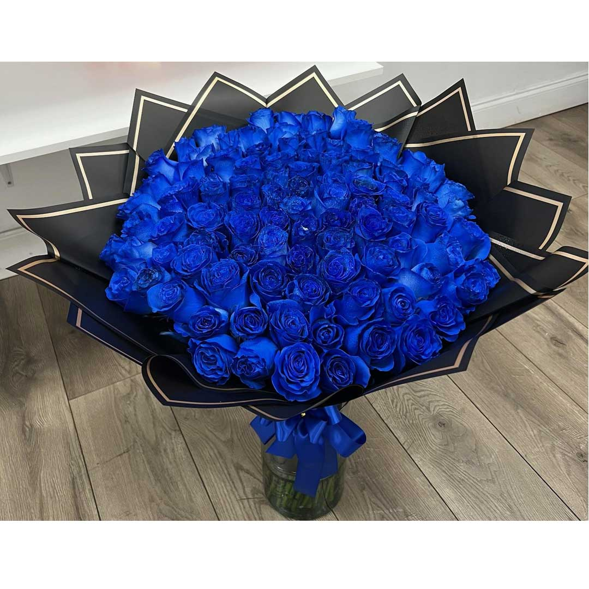

💌 Nuestro Primer Beso

Hermosa mía, quería escribirte esto para contarte lo que yo sentí aquel día ese en el que nos besamos.
Recuerdo esas escaleras sentados porque no íbamos a entrar.
Hacía frío, estábamos pegados uno al lado del otro hablando de la vida.
De sucesos que nos pasaron y conociendo más del otro.
Yo, aunque capaz no pareciera, estaba muy nervioso.
Esa mirada que tenías, contándome con tantas ganas tus anécdotas y explicándome cómo eras…
Y yo me sentía que estaba aprendiendo cómo era la mujer que en un futuro sería mi novia.
Sinceramente no creía que me dieras más atención, pero ahí, sentados en esa escalera,
con el calor de tus piernas y la calidez de tus palabras,
junto con tu dulce voz, era como si cada vez me estuviera envolviendo más,
perdiéndome entre tus palabras, tus ojos y tu dulce olor.
Y cuando llegó el silencio, una voz dentro mío dijo “ES AHORA”
Y con unos nervios, mis manos sudorosas como un nene de 12 con su primer beso,
me acerqué a tus labios y en el momento que los toqué sentí un calor tan grande
como si el frío de aquellos escalones ya no estuviera…
Y por esos segundos ya no estaba en aquel edificio, estaba flotando en las nubes
y sentía todo perfecto, como si toda mi vida hubiera estado dada vuelta y desarmada,
y en el momento que te besé supe que con vos podría arreglar eso.
Sé que la primera vez que te dije te amo fue más adelante,
pero ese día yo ya sentía que te amaba,
porque sin conocerte del todo yo sabía perfectamente
que ahí es donde quería estar y donde hoy en día quiero seguir estando.
Podrían pasar años, pero siempre tus besos me darán aquella calidez y sensación,
porque los besos de la mujer que amo nunca van a cambiar.
Te amo, mi niña hermosa ❤️
— Tu Xavi ✨